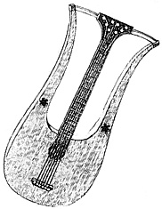
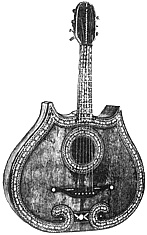

Этот сайт о гитарах.
Здесь вы можете прочитать об истории гитары,
узнать про некоторые её разновидности,
а также найти информацию о покупке этого
замечательного инструмента.
Гитара - струнный щипковый инструмент из семейства лютневых. По одной версии, слово "гитара" происходит от санскритского "кутур" (что означает "четырехструнный"). По другой же - оно образовано от санскритского "сангита" означающего "музыка" и от древнеперсидского "тар" означающего "струна".
История её очень интересна и уходит корнями глубоко в древность. Предполагается, что она пришла к нам с Древнего Востока. Первые изображения музыкального инструмента, напоминающего гитару, появились ещё в VII - VI вв. до н.э. Они были обнаружены при раскопках храма Бель в Нуффаре (Нипуре). На глиняной плите изображен пастух, играющий на музыкальном инструменте. Форма корпуса и длинный гриф говорят о том, что это, возможно, киннор, прародитель гитары. Небольшой корпус, возможно, был сделан из панциря черепахи или из тыквы (вероятно обтянутой кожей). Есть мнение, что киннор также был известен ещё в Древнем Египте. По одной версии, к египтянам он попал в XV веке до н.э. и получил название нефера или наблы. По другой - он пришёл в Египет и Шумеро-Вавилонию примерно в одно время. Его изображение можно встретить в виде иероглифов на стенах египетских пирамид. Интересно то, что этим же символом обозначались такие понятия, как "добро", "хорошо", "красиво". У вавилонян так же был известен музыкальный инструмент саббека, имевший выпуклый корпус, гриф с ладами и четыре струны. Позже его позаимствовали древние греки и римляне. В середине первого тысячелетия н.э. в Европе начала распространяться латинская гитара, популярная ещё у древних римлян, и обычно имевшая три или четыре струны. Играли на ней как пальцами, так и плектром (костяной или черепаховой пластинкой, которая, по сути, был древним медиатором).
Очень важным моментом для гитары стало появление в III-IV вв. в Китае инструмента с резонирующим корпусом, состоящим из трёх частей: верхней деки, нижней деки и обечаек (соедниющих их). Начиная с X в. изображения струнных щипковых инструментов становится общепринятыми. Из них можно увидеть, что струны (три или четыре) прикреплены одним концом к подставке на деке, а другим к колышкам, вставленным в колковую коробку.
Расцвет европейской музыки в XV - XVI вв. благотворно сказался и на развитии гитары. В Испании она вообще становится народным инструментом; к четырем струнам прибавляется пятая, и с этого времени гитара получает испанский строй (E, H, G, D, A) и название испанской гитары. Все струны на ней, кроме первой, были сдвоенными. Пятиструнная гитара начинает успешно конкурировать c лютней и виуэлой, своими ближайшими родственницами. Появляются первые учебные пособия и сборники со старинными испанскими танцами, песнями и романсами. Конструкция инструмента и техника игры на нем постоянно совершенствуется. И к концу XVIII в. испанская гитара приходит к современному виду: добавляется шестая струна (E) и все струны становятся одинарными. С этого момента гитара получает известность во всем мире.  Что касается России, то ещё в VI в. славяне играли на кифаре и гуслях. А в XVIII в. здесь появилась сначала пяти-, а затем и шестиструнная гитара, сразу же получившая большую популярность. В России же появился свой вариант гитары, имеющей семь струн и получившей название "русской". Для неё было написано множество произведений (в основном, конечно, нашими композиторами), но постепенно о ней стали забывать. Популярной она осталась лишь у бардов и цыган.